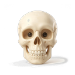
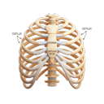
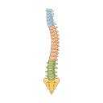
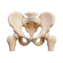
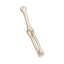
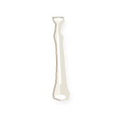
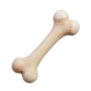
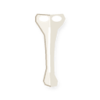

Esqueleto Humano (Soporte y Protección)
0 / 8 colocadosInstrucción
Arrastra los huesos desde el banco o tócalos para colocarlos en la silueta y descubrir su función en el cuerpo.
Banco de Huesos

Cráneo
Costillas
Columna vertebral
Pelvis
Húmero (Brazo)
Radio (Antebrazo)
Fémur (Muslo)
Tibia (Espinilla)Dato Científico de 3° Grado:
El cuerpo humano adulto tiene 206 huesos. Los huesos no son inertes: son órganos vivos y resistentes que sostienen nuestro peso y protegen órganos frágiles como el cerebro y el corazón.
Simulador Mecánico: Articulación del Codo
Músculo RelajadoAcción de Músculos y Tendones
Al extenderse el brazo, el músculo bíceps se relaja y se alarga. El músculo tríceps (detrás del hueso húmero) ayuda a abrir la articulación del codo como una bisagra.
Elige una Articulación
Codo ActivoToca cualquier articulación para ver cómo sus huesos, músculos y tendones se mueven en el simulador:
🦾 Codo (Bisagra)
🦵 Rodilla (Soporte)
🔄 Hombro (Esférica)
👤 Cuello (Pivote)
✍️ Muñeca (Precisión)
👟 Tobillo (Estabilidad)
Codo (Articulación en Bisagra)
Funciona exactamente como la bisagra de una puerta: une el húmero con el radio y cúbito, permitiendo abrir (extender) y cerrar (flexionar) el brazo para comer, peinarse o escribir.
Reto de Prevención: Cuidado de Huesos y Articulaciones
Situación 1 de 4
Situación Escolar
Cargando situación...